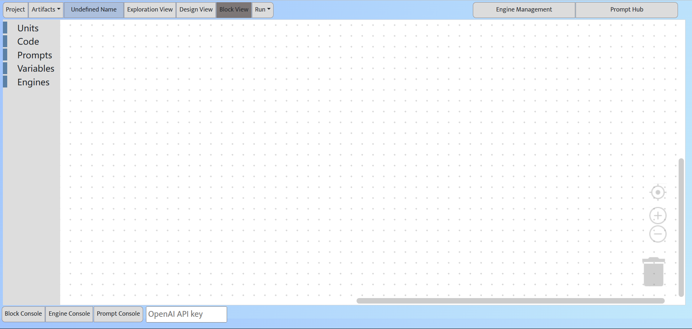

Block View
Build and test your AI chain using block-based visual programming
Block view: Block tabs (left), AI chain editor (right), Consoles (bottom)
We use block-based visual programming to support AI chain implementation, execution, and debugging. The current implementation is based on the open-source Blockly project.
On the left panel, the user can access building blocks in the Units, Code, Prompts, Variables, and Engines tabs.
Worker block
The core component of an AI chain is the worker. A new Worker block can be dragged to the editor from the Units tab. A Worker block consists of three slots: preworkers, prompt, and engine.
- The preworkers slot specifies a worker's inputs, which can be zero or more Input or Worker blocks. An Input block (from the Code tab) receives user input from the console or uses a variable as the input to the worker. Connecting a worker A to another worker B's preworkers slot is equivalent to running these two workers in series, that is, using A's output as B's input.
- The prompt slot can hold a natural language prompt. Prompt can be in the form of plain text, semi-structed text or code-like text. The prompt slot can also hold a piece of executable code (which can be thought of as a special type of prompt).
- The engine slot specifies the foundation model used to execute the prompt or the tool used to run the code (such as a Python interpreter) or a traditional ML model that the code uses.
With this worker block design, we can represent Software 1.0/2.0/3.0 workers using a unified worker block.
Container block
We design container block to represent composite workers. A new Container block can be dragged to the editor from the Units tab. A container block has two slots: preunits and units.
- The preunits slot specifies a composite worker's inputs, which can be zero or more workers (leaf or composite). These preunits will be executed before the present composite worker.
- The units slot can hold one or more worker or container blocks, forming a worker hierarchy, as well as any traditional code blocks for user input and control structure.
Code blocks
The Code tab includes traditional programming constructs, including console Input, console Output, assignment, if, for, while, and parallel blocks. Users can drag and drop the required code blocks into the editor and assemble them with the worker/container blocks by dragging and dropping. If a worker block needs to output information to end-users, it need to be placed in an Output block. Then, the output of this worker will be displayed in the bottom-right Output window. Otherwise, the worker's output can only be inspected in the Block Console during the worker execution, but not visiable to the end users.
Prompt, Variable and Engine blocks
Prompts, variables and engines used by the worker blocks are managed as explicit blocks in the corresponding tabs. In the Prompts and Engines tab, the user can import prompts from Prompt Hub and engines managed in Engine Management. In the Code tab, the user can create or delete variables.
Edit worker/container blocks
To make it intuitive for users to build and modify workers, all visual programming operations can be triggered directly on the worker/container block. Clicking the + icon on the right side of each slot can directly add or edit the corresponding blocks for the slot.
Edit AI chain
A block can be added to the editor by dragging and dropping a block template from the tab. The use can assemble the blocks by dragging and dropping in the editor. The user can zoom in/out the editor or place the selected block in the center of the editor by clicking the "+", "-", and "aim" button at the right side of the editr.
Selecting a block and pressing delete can delete a block. Deleted blocks can be restored from the Recycle Bin at the bottom-right corner of the editor. By righ-clicking a block, the user can duplicate, detele, collapse, or disable a block from the context menu. A Worker and Continaer block can be shown in a compact form to save space (by Inline Inputs from the context menu).
Collapsing a block will show the worker as a node. This saves the space for other blocks and is helpful when viewing and editing complex AI chains. A collapsed block can be restored by expanding the collapsed node.
Disableing a block will exclude the block from the AI chain execution. This is useful when testing variant workers in an AI chain. A disabled block has the gray grid background, and can be enabled back to the normal status.
The user can right-click a block and add a comment which will be accessed and edited by the "?" icon at the top-left corner of a block.
Run and debug AI chain and workers
Users can run or debug the AI chain by the Run menu.
When a worker is running, the bug signal in the top-left corner of the worker block will light up. The actual prompt used during the worker's execution and the engine outputs will be outputted to the Block Console. User inputs required for execution will be entered in the Block Console.
In debug mode, workers will be executed one at a time. After a worker finishes running, the execution will be suspended, and the user can check if the outputs in the Block Console match their expectation. If the result is as expected, the user can proceed to execute the next worker. Alternatively, the user can modify the prompt for the current worker in the Prompt Console and then re-run the current worker.
If a worker block is placed in an Output block, its output will be displayed in the bottom-right Output window. This window does not show the output of workers that are not placed in an Output block, nor will it show prompts.
The Block Console is used to help AI chain engineers debug the AI chain and thus contains prompt information and intermediate execution results. The Output Window at the bottom-right allows the engineer to inspect the AI chain output that end-users will see.